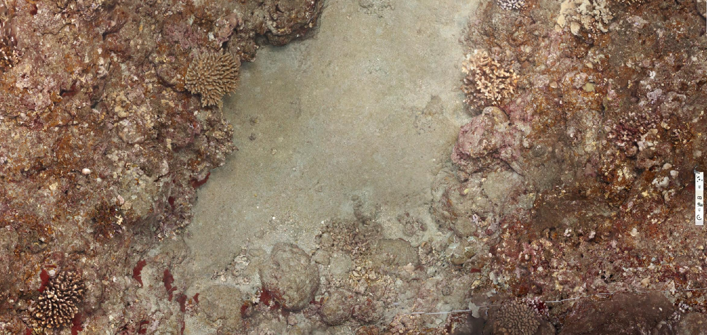

NOAA PIFSC · ESD · structure-from-motion
Reef photogrammetry
One dive · thousands of photos · a measurable reef
site AGR-455 · depth 8.4 m · 2025 StRS survey
1 · collect
A diver swims a gridded transect, shutter firing continuously
1480
frames captured
2 · overlap
Every point on the reef is seen from many angles
frame 0001
frame 0002
frame 0003
frame 0004
≈ 70% overlap
3 · align
Structure-from-motion solves every camera position
matched keypoints → bundle adjustment
4 · reconstruct
A dense point cloud, then a 3D surface mesh
18.4 M
points
5 · orthomosaic
Every frame stitched into one true-scale reef map
GeoTIFF · 1 cm / pixel
1 m
6 · elevation
The same surface as a DEM — depth, relief, rugosity
DEM · metres above datum
{{ dem }}
7 · serve
Cloud-optimized GeoTIFF — stream any zoom, no download
gs://nmfs_odp_pifsc/…
/orthomosaic_cog/2025/
2025_AGR-455_mos_cog.tif
/orthomosaic_cog/2025/
2025_AGR-455_mos_cog.tif
One file holds every zoom level. The viewer requests only the tiles on screen, so a 40 GB survey opens instantly in a browser.
z14
z16
z18
8 · measure
Colonies and transect lines annotated on the map — in the browser
39 annotations · site GUA-2838

3D MESH
model.obj
ORTHOMOSAIC
mos_cog.tif
ELEVATION
dem.tif
One dive becomes a measurable reef.
NOAA PIFSC · ESD · Coral Annotation Tool